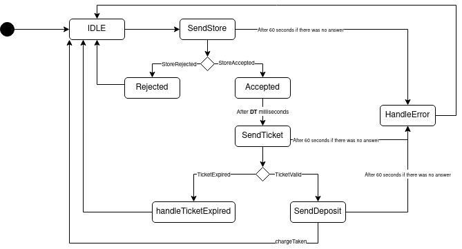

Introduction
Progetto finale di ISS, finalizzato allo sviluppo software di un magazzino refrigerato, nel
quale
vi è un robot che ha il compito di trasportare del cibo da un punto di partenza - chiamato INDOOR - alla cella
frigorifera.
Requirements
Work plan
- A partire dallo sprint0 analizzare il core business dell'applicazione
- Trovare ad analizzare eventuali criticità dei requisiti
- Implementare un MockTruck in modo da simulare un interazione del driver con la ServiceAccessGui, che interagisca con il ColdStorageService
- Implementare il ColdStorageService
- Implementare il TrasportTrolley e interfacciarlo con il BasicRobot
- Testing del sistema
- Aggregare le varie componenti in modo da creare un primo prototipo del sistema
Problem analysis
MockTruck
Obiettivo
Sviluppare un attore che simuli un driver che:- Richieda un Ticket
- Si rechi alla INDOOR
- Presenti il ticket al ColdStorageService e attenda la risposta
Problemi
Analizzando il testo dei requisiti possiamo dedurre i seguenti problemi:- La richiesta del ticket e la presentazione del ticket avvengono in istanti di tempo diversi Dai requisiti forniti dal committente si evince che la richiesta di immagazzinamento del cibo e l'effettivo arrivo alla INDOOR, se la richiesta viene accettata, avvengono in due momenti distinti.
- Scadenza del ticket Nel caso di richiesta accettata al driver viene fornito un ticket a cui è associata una scadenza entro la quale il driver deve recarsi presso l'INDOOR; di conseguenza è emerso un dubbio sul fatto che il driver debba conoscere o meno tale scadenza.
- Problema del load-time lungo Quando il driver presenta il ticket è possibile che il ColdStorageService non riesca a fornire la risposta chargeTaken in tempi brevi, in quanto il TrasportTrolley potrebbe essere occupato, quindi il driver non saprebbe se la sua richiesta è in attesa di una risposta oppure se il ticket non è stato accettato.
- Errore interno del ColdStorageService Se il ColdStorageService ha degli errori interni che implicano un down del servizio, come reagisce il driver.
- Quando il driver deve liberare la indoor Il driver deve liberare la INDOOR appena "as soon as possible" cioè appena preso il carico, oppure deve aspettare che il carico sia stato scaricato all'interno della ColdRoom
Possibili soluzioni
- La richiesta del ticket e la presentazione del ticket avvengono in istanti di tempo diversi Il tempo in cui il driver si reca alla INDOOR non è trascurabile, di conseguenza è necessario introdurre una variabile DT (driver time) che rappresenta il tempo di viaggio.
- Scadenza del ticket Se al driver fosse fornita la scadenza del ticket e supponendo che il driver conosca una stima del tempo di viaggio fino alla INDOOR, gli consentirebbe di decidere se intraprendere il viaggio o meno. In caso contrario, al driver verrebbe fornito solamente il TICKETID, di conseguenza si recherebbe sempre alla INDOOR dove avverrebbe poi il controllo sulla validità del ticket. Durante questa fase di sviluppo è stata adottata la seconda scelta, comunque sono necessarie delle ulteriori informazioni da parte del committente.
- Problema del load-time lungo Per sopperire a questo problema è necessario creare un interazione a due fasi: una in cui il driver presenta il proprio ticket (sendTicket) e riceve una risposta da parte del ColdStorageService (ticketAccepted/ticketRejected); e una in cui il driver invia la richiesta di deposito (deposit) e riceve poi chargeTaken
- Errore interno del ColdStorageService È possibile introdurre un timeout per ogni richiesta, in modo che il driver abbandoni alla scadenza del timer. Il timer è stato fissato a 60 secondi.
- Quando il driver deve liberare la indoor In questa fase di sviluppo è stato adottato l'approccio "as soon as possible"
Architettura Logica

Project
MockTruck
Il MockTruck è stato modellato come un Attore Qak, si compone di diversi stati che vengono ripetuti ciclicamente, in modo da rispettare l'obiettivo di simulare un driver che interagisce con la ServiceAccessGUIIl comportamento creato non implica più driver contemporanei ma solo uno che tenta il deposito ciclicamente.
In seguito viene riportato il diagramma degli stati.

Gli stati che rappresentato un rifiuto o un errore del sistema (Rejected, HandleError, handleTicketExpired), stampano degli errori e ripetono il ciclo.
La transizione tra lo stato Accepted e SendTicket rappresenta il viaggio che deve compiere il driver per arrivare alla INDOOR.
Lo stato SendDeposit implementa l'approccio "as soon as possible" descritto nell'analisi del problema, quindi al momento della ricezione del messaggio chargeTaken il driver abbandona l'indoor. Prima di ripere il ciclo, all'interno dello stato IDLE è presente una sleep.
Thread.sleep(Random.nextLong(1, 2001))
Sono presenti tre variabili che vengono modificate a ogni ciclo.
var FW = 0
var DT = 1000L
var TICKETID = 0
In particolare, le variabili FW e DT vengono inizializzate a dei valori casuali attraverso una funzione all'interno dello stato IDLE:
fun initDriver(){
FW = Random.nextInt(1, 101)
DT = Random.nextLong(1, 2001)
}
Invece la variabile TICKETID viene assegnata all'interno dello stato Accepted, prendendo il valore dalla risposta storeAccepted
onMsg (storeAccepted : storeAccepted(TICKETID)){
[#
TICKETID = payloadArg(0).toInt()
#]
}